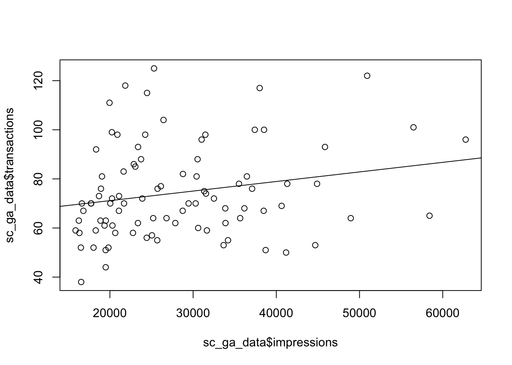

Regression is a way to represent cause and effect between two (or more variables). It attempts to make a best guess or model on how variables influence each other, and gives you an equation which you can use to predict future values.
If you want to just measure how closely two variables are and in which direction, correlation is more appropriate. However, if you want to try and make predictions from another metric then regression may be the tool for you.
There are many types of regression for different data scenarios, but we will cover just a few in this introduction that you may need for your own data.
Simple linear regression is performed between two variables, of the form:
y = Ax + eWhere y is the metric you want to predict (dependent variable), x the metric you want to use to predict y (regressors/predictors), A being the regression coefficient of variable x and e being the bit not predicted, sometimes called noise.
This you may also recognise as the equation for a straight line on a x-y plot, where A is the slope and e is the intercept, and that is pretty much what linear regression is, where the technique of least-squares is used to fit a line to some points.
An example applied to digital marketing would be predicting transactions from sessions. The regression coefficient in this case would represent a derived conversion rate.
If you already have a conversion rate, there isn’t much to gain from creating another via linear regression, but in many cases you don’t have that linked up view which is where regression can come into play. An example below looks for a relationship to a website’s SEO impressions in Google to the amount of transactions that day.
For this example we shall use the dataset search_console_plus_ga.csv, which is two datasets joined on date - SEO impressions and other metrics from Search Console via the searchConsoleR package, and Google Analytics total sessions and transactions from googleAnalyticsR
library(knitr) # nice tables
sc_ga_data <- read.csv("./data/search_console_plus_ga.csv", stringsAsFactors = FALSE)
kable(head(sc_ga_data))| date | sessions | transactions | clicks | impressions | ctr | position |
|---|---|---|---|---|---|---|
| 2016-06-03 | 682 | 78 | 288 | 35512 | 0.0081099 | 14.33242 |
| 2016-06-04 | 533 | 76 | 228 | 25727 | 0.0088623 | 16.78062 |
| 2016-06-05 | 568 | 92 | 248 | 18341 | 0.0135216 | 19.07748 |
| 2016-06-06 | 879 | 93 | 399 | 23385 | 0.0170622 | 17.21142 |
| 2016-06-07 | 1085 | 86 | 366 | 22874 | 0.0160007 | 20.51867 |
| 2016-06-08 | 1005 | 99 | 351 | 20237 | 0.0173445 | 17.24243 |
In R, you create linear regression via the lm() function. We will do so looking for the relationship between transactions and impressions.
model <- lm(transactions ~ impressions, data = sc_ga_data)The model summary takes a bit of getting used to to interpret, but the interesting bits for us are the r-squared value and the coefficents
library(broom) ## nice tidy model results
## overall model statistics
glance(model)## r.squared adj.r.squared sigma statistic p.value df logLik
## 1 0.04580986 0.03496679 18.41266 4.224805 0.04280121 2 -388.8667
## AIC BIC deviance df.residual
## 1 783.7333 791.2328 29834.3 88## coefficients
tidy(model)## term estimate std.error statistic p.value
## 1 (Intercept) 6.333054e+01 5.7041878936 11.102463 2.027362e-18
## 2 impressions 3.905562e-04 0.0001900116 2.055433 4.280121e-02The R-squared value is low which specifies the amount of variation explained by the model is low - only 5% of transactions can be attributed to impressions alone. This doesn’t necessarily mean the model is invalid, but does mean predictions will be less accurate.
We can say transactions are related to impressions in a measureable way; that 0.00039 transactions correspond to each impression, or 2564 impressions for each transaction.
We plot the data points and the regression line below:
## put the linear regression line (not accouting for errors)
plot(sc_ga_data$impressions, sc_ga_data$transactions)
abline(reg = coef(model))
Multi-linear regression is the same as simple linear regression, but you have more predictors - the below shows three (x, y, ø) with corresponding regression coefficients (A, B and C)
y = Ax + Bz + Cø + ePlotting a multi-linear regression is harder for more than 3 variables, as you need a multi-dimensional space, but its exactly the same principle - in this case the coefficients A, B and C show how much y would change if their respective regressor changed by 1 (and everything else stayed the same)
In R, you create multi-linear regression via the lm() function again, but you just add more variables to the model formula:
model2 <- lm(transactions ~ impressions + sessions + position, data = sc_ga_data)
## overall model statistics
glance(model2)## r.squared adj.r.squared sigma statistic p.value df logLik
## 1 0.1642764 0.1351233 17.43101 5.634947 0.001421253 4 -382.9012
## AIC BIC deviance df.residual
## 1 775.8025 788.3015 26130.25 86## coefficients
tidy(model2)## term estimate std.error statistic p.value
## 1 (Intercept) 69.8256229916 2.997209e+01 2.3296885 0.02216593
## 2 impressions -0.0001550714 2.905029e-04 -0.5338034 0.59485465
## 3 sessions 0.0394295484 1.331140e-02 2.9620894 0.00395002
## 4 position -1.3288129470 1.161496e+00 -1.1440533 0.25577588The r-squared value has improved a little so we can explain 16% of transactions from our model.
How do you think the coefficients of multiple linear regression applied to all Google Analytics sessions compare to the actual conversion rate registered in the E-commerce reports? What about the multi-touch reports?
The above regressions are all for continuous data - metrics that can take any value. They don’t work when the thing you want to predict is more categorical e.g. TRUE or FALSE. An example of this could be predicting if a customer is going to transact in a web session or not.
In R, you create logistic regression by using the glm() function and passing in a family argument. In this case we choose binomial (another name for logistic), but the argument takes many other names too for different types of regression - see ?family for details.
model <- glm(sale ~ saw.promotion + existing.customer + hour.of.day,
data = webdata,
family = binomial)